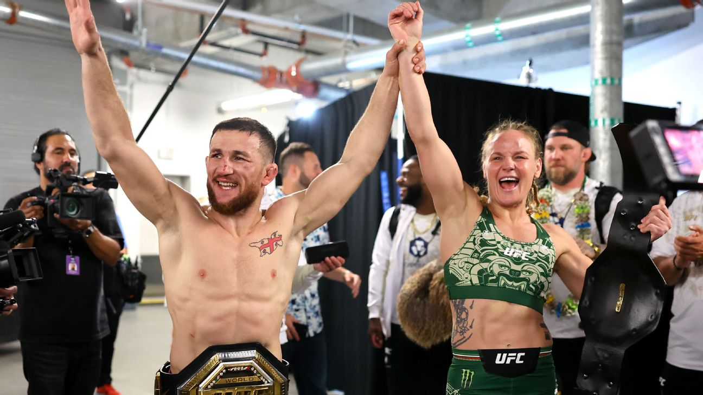
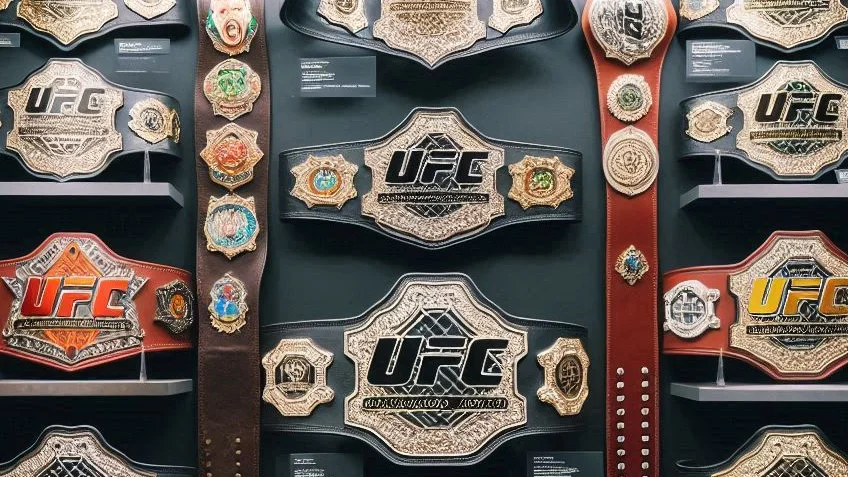

Main information

The Ultimate Fighting Championship (UFC) is an American mixed martial arts (MMA) promotion
company based in Las Vegas, Nevada. It is owned and operated by TKO Group Holdings, a majority
owned subsidiary of Endeavor Group Holdings. It is the largest MMA promotion in the
world as of 2023. It produces events worldwide that showcase 11 weight divisions (eight men's
and three women's) and abides by the Unified Rules of Mixed Martial Arts. As of 2024, it had
held over 700 events. Dana White has been its president since 2001 and CEO since 2023. Under
White's stewardship, it has grown into a global multi-billion-dollar enterprise.
The UFC was founded by businessman Art Davie and Brazilian martial artist Rorion Gracie, and
the first event was held in 1993 at McNichols Sports Arena in Denver, Colorado. The purpose
of the UFC's early competitions was to identify the most effective martial art in a contest with
minimal rules and no weight classes between competitors of different fighting disciplines. In
subsequent events, more rigorous rules were created and fighters began adopting effective
techniques from more than one discipline, which indirectly helped create a separate style of
fighting known as present-day mixed martial arts.
The UFC was initially owned by the Semaphore Entertainment Group (SEG) until it had financial
issues and it was sold to the brothers Frank and Lorenzo Fertitta in 2001, who formed the
company Zuffa to operate the UFC, and placed Dana White as the president of the company.
In 2016, UFC's parent company, Zuffa, was sold to a group led by Endeavor, then known as William
Morris Endeavor (WME–IMG), including Silver Lake Partners, Kohlberg Kravis Roberts and MSD
Capital for US$4.025 billion. In 2021, Endeavor bought out Zuffa's other owners at a
valuation of $1.7 billion. The organization had 578 fighters contracted as of January
2023.
With a TV deal and expansion in Australia, Asia, Europe, and new markets within the
United States, the UFC has achieved greater mainstream media coverage. It earned US$609 million
in 2015, and its next domestic media rights agreement with ESPN was valued at $1.5 billion
over a five-year term.
In April 2023, Endeavor Group Holdings announced that UFC would merge with the wrestling
promotion WWE to form TKO Group Holdings, a new public company majority-owned by Endeavor, with
Vince McMahon serving as an executive chairman of the new entity and White remaining as UFC
president. The merger was completed on September 12, 2023.
History

Early 1990s competition:
Early 1990s competition
Royce Gracie used Brazilian jiu-jitsu in the early years of UFC to defeat opponents of
greater size and strength.
Art Davie proposed to John Milius and Rorion Gracie an eight-man single-elimination
tournament called "War of the Worlds". It was inspired by the "Gracies in Action"
video-series produced by the Gracie family of Brazil which featured Gracie jiu-jitsu
students defeating martial artists of various disciplines such as karate, kung fu, and
kickboxing on Vale Tudo matches. The tournament would also feature martial artists from
different disciplines facing each other in no-holds-barred combat to determine the best
martial art, and would aim to replicate the excitement of the matches Davie saw on the
videos. Gracie accepted, as he was interested in showcasing and promoting his family's
own jiu-jitsu for a wide audience. Milius, a film director/screenwriter and Gracie
student, agreed to be the event's creative director. Davie drafted the business plan, and 28
investors contributed the initial capital to start WOW Promotions to develop the tournament
into a television franchise.
In 1993, WOW Promotions sought a television partner and approached pay-per-view producers
TVKO (HBO) and SET (Showtime), and Campbell McLaren and David Isaacs at Semaphore
Entertainment Group (SEG). Both TVKO and SET declined, but SEG—a pioneer in pay-per-view
television that had produced such offbeat events as a tennis match between Jimmy Connors and
Martina Navratilova—became WOW's partner in May 1993.[28] UFC promoters initially pitched
the event as a real-life fighting video game tournament similar to Street Fighter and Mortal
Kombat. SEG contacted video and film art director Jason Cusson to design a fighting
arena for the event. Rorion and Davie didn't want a traditional roped ring, citing fears—by
showing old Vale Tudo footage—that the fighters could escape through the ropes during
grappling and use it as an advantage, or fall off and hurt themselves. SEG's executives
agreed, and also wanted a way to visually differentiate their event from professional boxing
and professional wrestling. Some ideas included a traditional roped-ring surrounded by
netting, a moat with alligators, a raised platform surrounded by razor-wire fence,
electrified fencing, men in togas and netting that could be lowered from the ceiling by a
pulley. Eventually Cusson designed an arena with eight sides surrounded by chain-link fence,
the trademarked Octagon, which became the event's signature setting. Cusson remained the
group's production designer through UFC 27. SEG devised the show's name as "The Ultimate
Fighting Championship".
WOW Promotions and SEG produced the first event, later retroactively called UFC 1, at
McNichols Sports Arena in Denver, Colorado on November 12, 1993. Art Davie was its booker
and matchmaker. It proposed to find answers for sports fans' questions such as, "Can a
wrestler beat a boxer?" As with most martial arts at the time, fighters typically had
skills in just one discipline and little experience against opponents with differing
skills.[34] The television broadcast featured kickboxer Kevin Rosier, taekwondo practitioner
Patrick Smith, savate fighter Gerard Gordeau, karate expert Zane Frazier, shootfighter Ken
Shamrock, sumo wrestler Teila Tuli, boxer Art Jimmerson, and 175 lb (79 kg) Brazilian
jiu-jitsu black belt Royce Gracie—younger brother of UFC co-founder Rorion, whom Rorion
selected to represent his family. Royce's submission skills proved the most effective in the
inaugural tournament, earning him the first ever UFC tournament championship after
submitting Jimmerson, Shamrock, and Gordeau in succession. The show was extremely
successful, with 86,592 pay-per-view television subscribers.
It's disputed whether the promoters intended the event to be a precursor to future events.
"That show was only supposed to be a one-off", eventual UFC president Dana White said. "It
did so well on pay-per-view they decided to do another, and another. Never in a million
years did these guys think they were creating a sport."[36] Davie, in his 2014 book Is This
Legal?, an account of the creation of the first UFC event, disputes the perception that the
UFC was seen by WOW Promotions and SEG as a one-off, since SEG offered a five-year joint
development deal to WOW. He says, "Clearly, both Campbell and Meyrowitz shared my unwavering
belief that War of the Worlds[b] would be a continuing series of fighting tournaments—a
franchise, rather than a one-night stand."
With no weight classes, fighters often faced significantly larger or taller opponents. Keith
"The Giant Killer" Hackney faced Emmanuel Yarbrough at UFC 3 with a 9-inch height and 400
pounds (180 kg) weight disadvantage.
During this early phase of the organization, the UFC showcased a bevy of styles and
fighters. Aside from the aforementioned Royce Gracie, Ken Shamrock, and Patrick Smith, they
also featured competitors such as Hall of Famer Dan Severn, Marco Ruas, Gary Goodridge, Don
Frye, Kimo Leopoldo, Oleg Taktarov, and Tank Abbott.
In April 1995, following UFC 5 in Charlotte, North Carolina, Davie and Gracie sold their
interest in the franchise to SEG and disbanded WOW Promotions.
Tightening up of the rules
Although UFC used the tagline "There are no rules" in the early 1990s, the UFC did in fact
operate with limited rules. In a UFC 4 qualifying match, competitors Jason Fairn and Guy
Mezger agreed not to pull hair—as they both wore pony tails tied back for the match. The
UFC had a reputation, especially in the early days, as an extremely violent event.
UFC 5 also introduced the first singles match, a rematch from the inaugural UFC featuring
three-time champion Royce Gracie and Ken Shamrock, called "The Superfight". "The
Superfight" began as a non-tournament match that would determine the first reigning UFC
Champion for tournament winners to face; it later evolved into a match that could
feature either title matches or non-title matches. The "Superfight" would eventually
completely phase out tournament matches.
On the other hand, the first "Superfight" at UFC 5 was also considered a failure. In the
first minute of the fight Shamrock knocked Royce to the ground and landed inside his guard.
For the next 30 minutes Shamrock was inside Royce's guard, with the two throwing punches and
headbutts at each other but without any change or action, with the crowd booing the
fighters. After 30 minutes the fight was stopped as it had exceeded the time limit allocated
for the pay-per-view and was given another 5 minutes of extra time due to protests from the
spectators. The fight was over after 36 minutes and a draw was declared.[45] Because of this
controversial fight, the UFC would later start to introduce time limits, judges to decide
draws, and authorized referees to stand up fighters and restart the bout if they have too
much inactivity.
In 1996, the UFC had its first event outside continental United States with UFC 8 in
Bayamón, Puerto Rico, and in 1997, UFC Japan: Ultimate Japan was its first foreign event.
Mid-2000s expansion:
With increased visibility, the UFC's pay-per-view buy numbers exploded. UFC 52, the first event
after the first season of The Ultimate Fighter featuring eventual-UFC Hall of Famer: Chuck "The
Iceman" Liddell, avenging his defeat to fellow eventual-Hall of Famer, Randy Couture, drew a
pay-per-view audience of 300,000,doubling its previous benchmark of 150,000 set at UFC 40.
Following the second season of The Ultimate Fighter, the UFC's match between Liddell and Couture
drew an estimated 410,000 pay-per-view buys at UFC 57.
For the rest of 2006, pay-per-view buy rates continued to skyrocket, with 620,000 buys for UFC
60: Hughes vs. Gracie —featuring Royce Gracie's first UFC fight in 11 years—and 775,000 buys for
UFC 61 featuring the highly anticipated rematch between Ken Shamrock and Tito Ortiz, the coaches
of The Ultimate Fighter 3. The organization hit a milestone with UFC 66, pitting Ortiz in a
rematch against Liddell with over 1 million buys.
The surge in popularity prompted the UFC to beef up its executive team. In March 2006, the UFC
announced that it had hired Marc Ratner, former executive director of the Nevada Athletic
Commission, as Vice President of Regulatory Affairs. Ratner, once an ally of Senator
McCain's campaign against no holds barred fighting, lobbied numerous athletic commissions to
help raise the UFC's media profile in an attempt to legalize mixed martial arts in jurisdictions
inside and outside the United States that had yet to sanction the sport.
In December 2006, Zuffa acquired the northern California-based promotion World Extreme
Cagefighting (WEC) in order to stop the International Fight League (IFL) from making a deal with
Versus (now NBC Sports Network). At the time, the UFC had an exclusive deal with Spike, so the
purchase of the WEC allowed Zuffa to block the IFL from Versus without violating their
contract. The WEC showcased lighter weight classes in MMA, whereas the UFC featured heavier
weight classes.
In December 2006, Zuffa also acquired their cross-town, Las Vegas rival World Fighting Alliance
(WFA). The WFA had signed major fighters at the time, most notably Quinton "Rampage" Jackson and
Lyoto Machida, but their events turned out to be a financial disaster. Zuffa bought select
assets from WFA, including select fighter contracts, as well as trademarks and other
intellectual property.
The sport's popularity was also noticed by the sports betting community as BodogLife.com, an
online gambling site, stated in July 2007 that in 2007 UFC would surpass boxing for the first
time in terms of betting revenues. In fact, the UFC had already broken the pay-per-view
industry's all-time records for a single year of business, generating over $222,766,000 in
revenue in 2006, surpassing both WWE and boxing.
The UFC continued its rapid rise from near obscurity with Roger Huerta gracing the cover of
Sports Illustrated and Chuck Liddell on the front of ESPN The Magazine in May 2007.